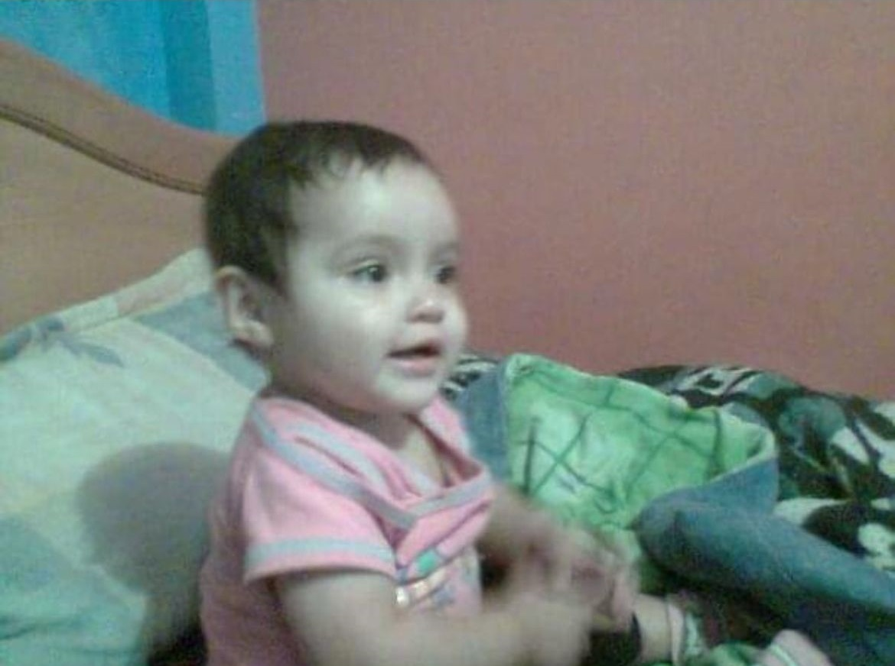

Proyecto de Vida
Mi Futuro

Opcion 1: Arquitectura
Mi visión para el futuro se centra en mi pasión por la arquitectura. Me gustaría dedicar mi carrera académica y profesional al estudio y la práctica de esta disciplina apasionante. Visualizo un camino en el que pueda profundizar en el arte y la ciencia de diseñar espacios habitables, fusionando creatividad, funcionalidad y estética para crear entornos que inspiren y mejoren la calidad de vida de las personas.
Reseña de la Carrera¿Por que?
Desde hace tiempo, me ha fascinado la idea de diseñar y crear espacios habitables que impacten positivamente en las personas y en su entorno. La arquitectura ofrece la oportunidad perfecta para combinar mi pasión por el diseño con mi peculiar fascinación por los edificios. La posibilidad de imaginar y dar vida a estructuras que no solo son funcionales, sino también estéticamente atractivas, me llena de emoción. Cada edificio tiene su propia historia que contar, y la idea de ser capaz de contribuir a este relato a través del diseño es algo que me inspira profundamente.
¿Donde?
Para materializar este sueño, aspiro a estudiar en la Universidad del Bosque en Colombia, reconocida por su excelencia académica en el campo de la arquitectura. La oportunidad de formarme en una institución con una sólida reputación y acceso a recursos de vanguardia me permitirá adquirir los conocimientos y habilidades necesarios para convertirme en un arquitecto/a competente y visionario/a. Además, considero la posibilidad de participar en un programa de intercambio en otro país como una experiencia enriquecedora que complementaría mi educación universitaria. Un intercambio internacional me brindaría la oportunidad de sumergirme en nuevas culturas, explorar diferentes estilos arquitectónicos y ampliar mi perspectiva sobre el diseño y la construcción.
Universidad del BosqueDespues de terminar
Mi aspiración es llevar a cabo mis estudios de arquitectura en un contexto internacional, específicamente en un país de Europa. La rica historia arquitectónica y la diversidad de estilos y enfoques en Europa ofrecen un entorno estimulante para mi desarrollo académico y profesional. Aspiro a sumergirme en esta atmósfera creativa y absorber las diversas influencias culturales y estéticas que caracterizan a la región.
Aspiraciones
Además de mi pasión por la arquitectura, aspiro a alcanzar una buena estabilidad económica que me permita disfrutar de la vida y realizar mis sueños de viajar y explorar nuevas culturas. Quiero tener la libertad financiera para embarcarme en aventuras alrededor del mundo y enriquecer mi experiencia personal y profesional. También tengo el deseo de apoyar a mis hermanos en sus estudios, brindándoles el apoyo financiero y emocional que necesiten para alcanzar sus metas académicas y profesionales. Creo firmemente en el poder de la educación y quiero contribuir al éxito de mis seres queridos de la misma manera en que ellos han contribuido al mío.
Opcion 2: Derecho Penal
Me gustaría estudiar Derecho Penal, una disciplina que me atrae por su importancia en la defensa de los derechos individuales y la justicia social. Mi interés por este campo se basa en mi deseo de comprender cómo se aplican las leyes para proteger a la sociedad y garantizar un sistema legal justo y equitativo. Después de completar mis estudios, aspiro a ejercer como abogado/a penalista, representando a aquellos que enfrentan acusaciones criminales y trabajando para asegurar que reciban un juicio justo y una defensa adecuada. Me comprometo a abogar por los derechos de los más vulnerables y a contribuir a la protección de la justicia y los principios éticos en el ámbito legal.
Reseña de la Carrera¿Por que?
Me gustaría estudiar Derecho Penal debido a mi profundo interés por la lectura y mi pasión por comprender los derechos y deberes de las personas en el contexto legal. Esta área del derecho me atrae por su complejidad y su importancia en la protección de los derechos individuales y la promoción de la justicia. Mi amor por la lectura me ha llevado a explorar una variedad de temas, incluyendo la legislación y los sistemas legales. Esta curiosidad natural se combina con mi deseo de comprender cómo se aplican las leyes para garantizar la equidad y la justicia en la sociedad. Estudiar Derecho Penal me brindaría la oportunidad de profundizar en mis conocimientos sobre los derechos y deberes de las personas en el ámbito legal, así como de explorar los principios éticos y morales que subyacen a la ley penal. Me apasiona la idea de utilizar mis habilidades legales para proteger a los más vulnerables y abogar por la justicia en el sistema legal.
¿Donde?
Mi preferencia es estudiar esta carrera en la Universidad Nacional de Colombia, una institución reconocida por su excelencia académica y su compromiso con la educación superior. Creo que la Universidad Nacional proporcionará un entorno de aprendizaje estimulante y recursos de calidad que me permitirán alcanzar mis metas académicas y profesionales en el campo del Derecho Penal.
Universidad Nacional de Colombia
Sin embargo, si no tengo la oportunidad de estudiar en la Universidad Nacional, mi siguiente opción sería la Universidad Jorge Tadeo Lozano. Esta institución también cuenta con una sólida reputación en el campo del derecho y ofrece programas académicos que se alinean con mis intereses y objetivos profesionales.
Despues de terminar
Después de completar mis estudios, mi intención es ejercer la carrera de manera profesional y comprometida. Aspiro a trabajar como abogado/a penalista, representando a aquellos que enfrentan acusaciones criminales y defendiendo sus derechos en el sistema legal. Además, me gustaría contribuir al desarrollo y la reforma del sistema penal, abogando por políticas y prácticas que promuevan la equidad, la justicia y el respeto por los derechos humanos. Estoy comprometido/a a utilizar mis conocimientos y habilidades en Derecho Penal para hacer una diferencia positiva en la vida de las personas y en la sociedad en general.
Aspiraciones
Mi objetivo es ejercer la carrera profesionalmente y contribuir al sistema legal con integridad y compromiso. Además, tengo el deseo de alcanzar una buena estabilidad económica que me permita realizar mis sueños de viajar, tener una casa propia y disfrutar de mis intereses. Esto incluye la oportunidad de vivir en un país de Europa, donde pueda experimentar nuevas culturas, ampliar mis horizontes y continuar creciendo tanto personal como profesionalmente. Estoy decidido/a a trabajar arduamente para alcanzar mis metas, tanto en el ámbito legal como en el aspecto personal. Creo firmemente que con dedicación y esfuerzo, puedo lograr el equilibrio entre una exitosa carrera en Derecho Penal y una vida plena y satisfactoria que incluya la realización de mis sueños y aspiraciones.